library(ggplot2)
library(openintro) # to access the duke_forest dataset6 Data Visualization with ggplot
In this chapter we will learn how to create professional-looking data visualizations using ggplot2. The main idea behind ggplot2 is that plots are built in layers: we start with a base plot that specifies the dataset and how variables are mapped to the axes, and then we add layers that display the data (histograms, density curves, scatter plots, boxplots, etc.). Throughout this reading, you should run the code both as a whole and layer-by-layer to see what each line contributes to the final visualization. We will focus on univariate plots (one variable), bivariate plots (two variables), and how grouping by categories helps us compare patterns across different groups.
- Create a
ggplot2visualization by initializing a plot withggplot()and mapping variables usingaes(). - Produce and interpret common univariate visualizations (histograms, density plots, boxplots) for a single quantitative variable.
- Create bivariate visualizations (scatter plots and grouped comparisons) to explore relationships between two variables.
- Group and compare distributions across categories using aesthetics (such as
fill=andcolor=) and using faceting.
Supplemental Material
6.1 The Basics of ggplot2
In a previous course (or a previous semester), you may have visualized data using Base R. In this class, we want to introduce the idea of ggplot2 instead. This package uses the concept of layers when making a visualization. Each layer we give it will have a set purpose that adds to the current visualization. We can build quite complex visualizations by adding many layers on top of each other.
To start creating a visualization, we must specify the base layer. This can be done by using the ggplot() function and specifying the dataset that we will be using. That by itself will be enough to initialize the visualization (but it will not show us anything since we have not specified anything else). We can then add geom layers to add graphical elements (like histograms, barplots, boxplots, etc.). Aesthetics help us modify what is happening in the geom layer. We can specify which variables should be mapped to which axes using the aes() function as shown below. Additionally, we can even map variables to colors, shape, size, fill, etc. using the aes() function (which stands for aesthetics).
In order to better understand what is happening, let’s look at the following example. Here we wish to use the duke_forest dataset to plot a histogram of the area. Therefore, in the ggplot() function, we will specify the dataset and map the area variable to the x-axis within the aes() function. Doing just this will show a plotting window with the x-axis displayed but nothing else. We can then add a geom_histogram() layer to produce a histogram.
ggplot(duke_forest, aes(x=area)) +
geom_histogram()`stat_bin()` using `bins = 30`. Pick better value with `binwidth`.
As you can see above, we get a histogram of the area. When we originally ran the code a warning message popped up telling us that by default it divided the data into 30 bins and that we should manually choose the number of bins or the binwidth. While it is not completely necessary, it should be done so the message goes away (even if we want to specify bins = 30 to keep the same visualization). The code below shows us how we can accomplish this by specifying that we want only 10 categories for our data:
ggplot(duke_forest, aes(x=area)) +
geom_histogram(bins=10)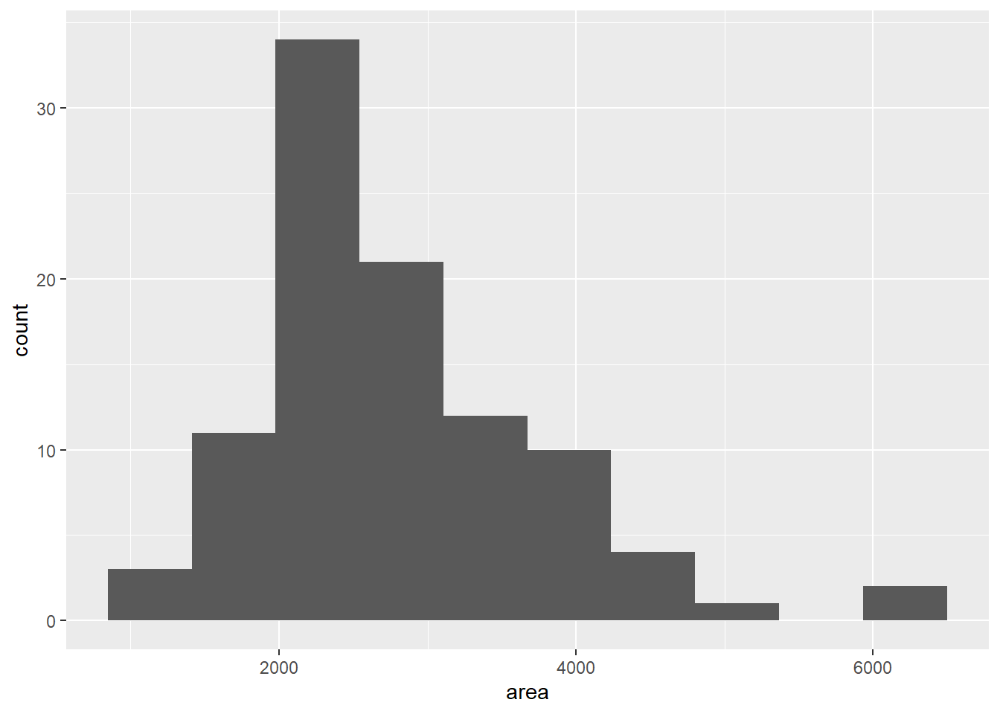
So far we have seen how we can create a very basic histogram using ggplot2. Much like in Base R, we can add some complexity to the visualization by altering the color and border of the bins. The fill argument will specify the color that goes inside of the bins and the color argument specifies the color of the bin borders. Both of these can be specified in the geom_histogram() function and can be seen below:
ggplot(duke_forest, aes(x=area)) +
geom_histogram(bins=10, fill="lightblue", color="black")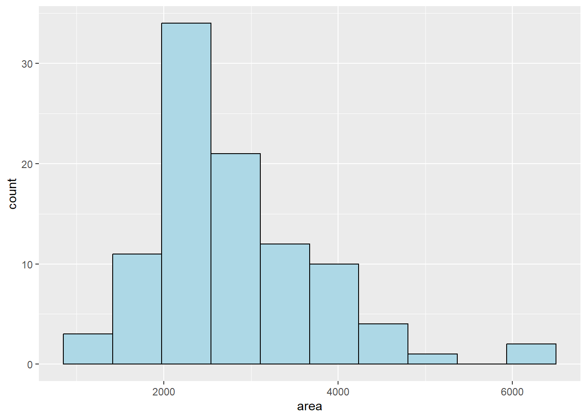
If we would rather have a density plot than a histogram then we can instead use a different geom layer, such as the geom_density(). Similar to the histogram, you can specify the fill color and the border color. Additionally, just like in Base R, you can also specify the width of the line using the linewidth argument. Much like all of this code, it is important for us to run the code on our own slightly changing/removing/adding pieces to see what happens to the output for the visualization.
ggplot(duke_forest, aes(x=area)) +
geom_density(fill="lightyellow", color="red", linewidth=1)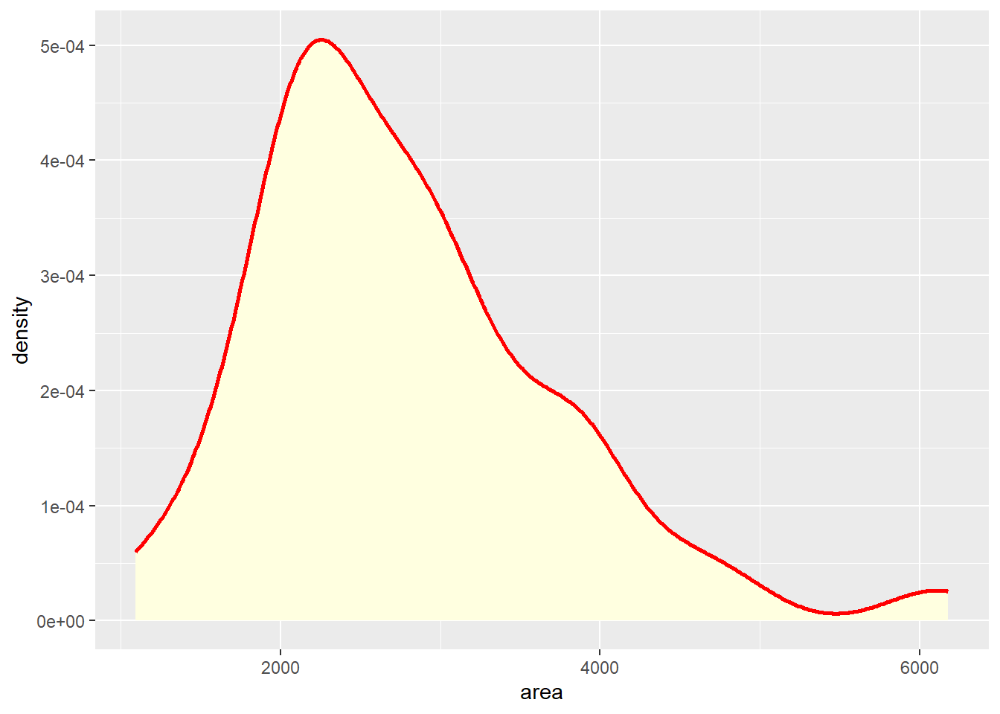
So far, we have briefly gone over some of the things that we can do in ggplot2. The example below shows us putting everything together and combining multiple layers into a single visualization. So, as you run the following code take it piece by piece and see what it does and how it alters the visualization from the prior picture.
Breaking down the code below, we can first see that we are using the duke_forest dataset with the area variable on the x-axis. Since we want to include both a histogram and a density plot, we will need to specify the y-axis to be after_stat(density) (much like how we had to specify the freq=FALSE in Base R). We can then add the histogram layer to the visualization along with arguments to customize how the histogram will look. Next, we can add the density layer to the visualization once again customizing how this layer will look.
Besides just adding layers, we can customize how the plot looks by altering the title of the plot and the axis names. To do this, we can use the labs() function and specify the main title (using the title argument) and the x-axis label (using the x argument). The last line of code alters the theme of the plot by adjusting the plot title to be centered, which is horizontally adjusting it to 0.5 (which means centering it in the middle).
ggplot(duke_forest, aes(x=area, y=after_stat(density))) +
geom_histogram(bins=10, fill="lightblue", color="black") +
geom_density(color="red", linewidth=1) +
labs(title="Histogram of House Areas", x="Area of Homes") +
theme(plot.title=element_text(hjust=0.5))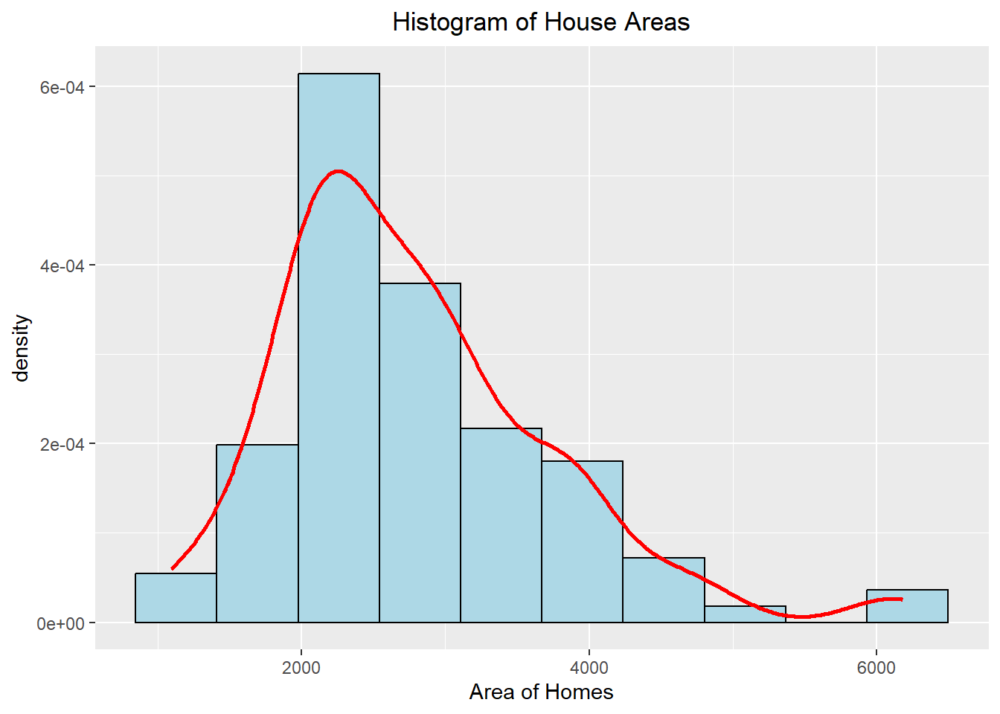
This plot should look familiar to us as we made a very similar-looking one using Base R in Data 200. The ggplot visualization looks a little cleaner though and will have more options for customization (but the Base R is probably quicker to do to see what it might look like before we spend time making it “pretty”). We will see in future lectures how we can use ggplot for other more complex visualizations by adding additional layers to our code.
6.2 Univariate Visualizations
As we have already (briefly) discussed, ggplot2 is an advanced graphics library that will allow us to produce highly customizable and professional-looking visualizations. It works by initializing a base layer (which is the ggplot() function) and specifying the data we plan to utilize when making the visualization. We can then map variables within the aesthetic() environment. To add elements to the graph, we must pass different layers into the code with these typically following the pattern geom_XYZ(). We can then customize the visualization even more with additional commands. Throughout this write-up, we will see how we can create various univariate visualizations using ggplot. As you read the document, try running the code as a whole and running the code layer-by-layer to see how it changes the graph.
6.2.1 Histograms
Histograms are useful when we want to visualize the distribution of univariate data, which essentially allows us to see where the data falls. The height of the bar indicates the number of observations in the category. Below we can see how we can construct a histogram using ggplot. We first specify the data we will be using and that we want to map the “area” variable to the x-axis. We can then add a geometry layer that creates a histogram for us using the geom_histogram() layer. Additionally, we can customize the histogram with various colors and add a centered title to make the visualization more appealing.
ggplot(duke_forest, aes(x=area)) +
geom_histogram(fill="lightblue", color="black", binwidth = 250) +
labs(title="Histogram of Area") +
theme(plot.title = element_text(hjust=0.5))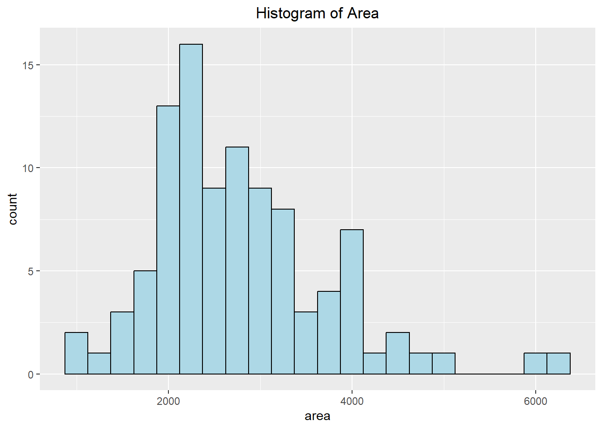
6.2.2 Density Plots
Another way in which we can visualize the distribution of the data is to use a density plot. Instead of counting the number of occurrences in each category, it tries to draw a smooth line to indicate where the data lies. The y-axis represents the probability density (the chance of observing a certain x-value), which is different than the count typically seen with a histogram.
A frequency polygon is similar to the density curve except the frequency polygon shows the count and not the density. The frequency polygon is influenced by the histogram in that the points are chosen by calculating the top-middle of each histogram bin and then connecting them to each other with a line.
ggplot(duke_forest, aes(x=area)) +
geom_density(fill="lightblue", color="black", lty=2, alpha=0.5) +
labs(title="Density of Area") +
theme(plot.title = element_text(hjust=0.5))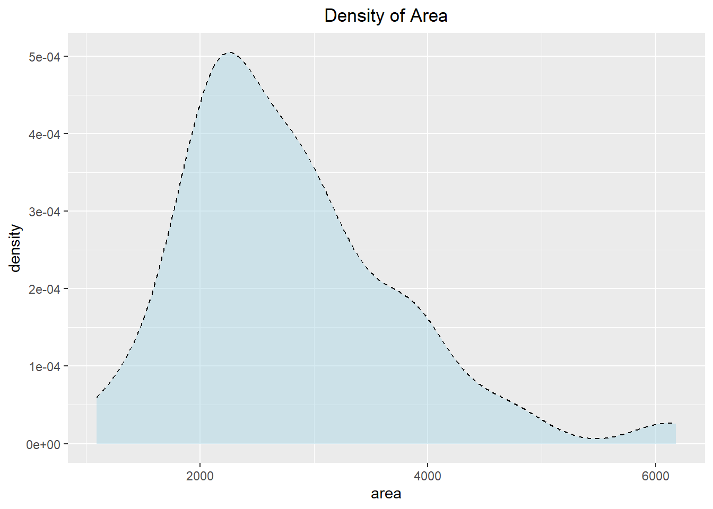
ggplot(duke_forest, aes(x=area)) +
geom_freqpoly(binwidth=250, color="red", linewidth=1) +
labs(title="Frequency Polygon of Area",
subtitle="Tells us the predicted count (not density)") +
theme(plot.title = element_text(hjust=0.5),
plot.subtitle = element_text(hjust = 0.5))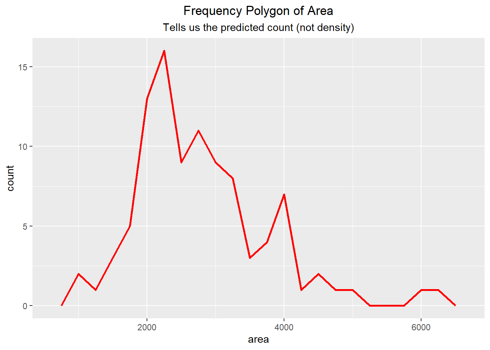
6.2.3 Altering the Scale
Sometimes it is helpful to alter the scale to better represent the data. For instance, if we have heavily-right skewed data then it might be beneficial to perform a logarithmic transformation on the scale (x-axis). We can see an example of this below, noting that the x-axis for the scaled visualization mimics the value 10 raised to the powers 2, 3, and 4 (as \(10^2=100\), \(10^3=1000\), and \(10^4=10000\)).
set.seed(12345)
skewed_data <- exp(rnorm(1000, mean = 5, sd = 1))*10 +
sample(c(0, 10, 100, 1000), 1000, replace = TRUE)
skewed_data <- data.frame(values = skewed_data)
ggplot(skewed_data, aes(x=values)) + geom_density() +
labs(title="Non-scaled X axis") +
theme(plot.title = element_text(hjust=0.5))
ggplot(skewed_data, aes(x=values)) + geom_density() +
scale_x_log10() + labs(title="Log-Scaled X axis") +
theme(plot.title = element_text(hjust=0.5))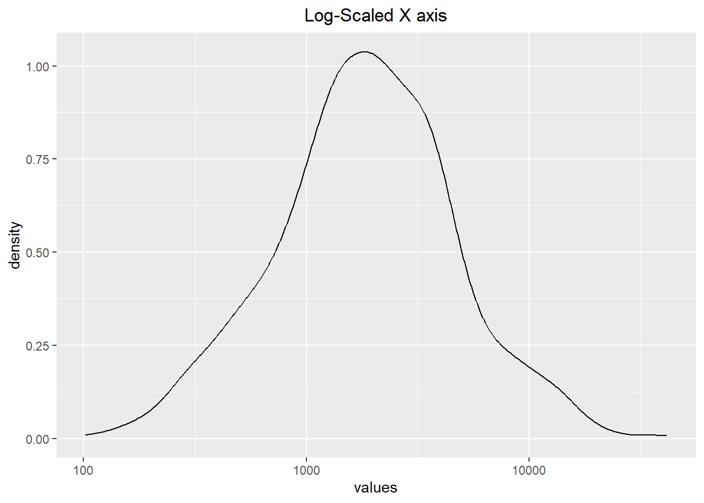
6.2.4 Dot Plots
Another way to visualize the distribution of data is to use a dot plot. These are similar to histograms and bar plots in the sense that the height of the bar represents the number of occurrences in the category. Instead of using bars, dot plots use dots (who would have guessed…). Within this section, we show a few different iterations of how they might look.
In the example below, we use a dot plot to visualize the count of the number of bedrooms a house has. Notice though that in the first visualization the y-axis values are between 0 and 1. This does not make sense, and therefore we can go about removing the y-axis using the scale_y_discrete() function and setting the breaks to NULL.
table(duke_forest$bed)
2 3 4 5 6
4 30 52 11 1 ggplot(duke_forest, aes(x=bed)) + geom_dotplot(binwidth=.05) +
labs(title="Dot Plot for # of Bedrooms",
subtitle="The y-axis does not make sense") +
theme(plot.title = element_text(hjust=0.5),
plot.subtitle = element_text(hjust=0.5))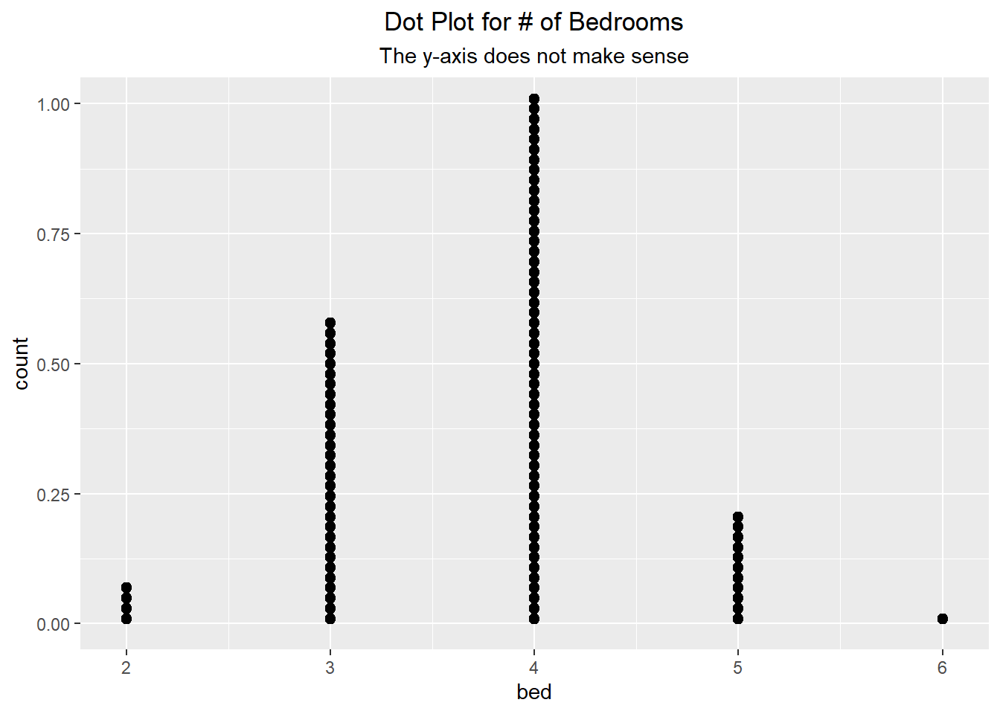
ggplot(duke_forest, aes(x=bed)) + geom_dotplot(binwidth=.05) +
scale_y_discrete(breaks = NULL, expand = c(0, 0)) +
labs(title="Dot Plot for # of Bedrooms",
subtitle="The y-axis is removed") +
theme(plot.title = element_text(hjust=0.5),
plot.subtitle = element_text(hjust=0.5))
We can do something similar with continuous data. Below we can see two different visualizations presented, with the only difference being the method used. The one on the left uses a typical dot plot, which places the dots at the exact value. Alternatively, the one on the right uses a histo-dotplot, which bins the data (like a histogram) and then plots the dots. We can see that the results do look slightly different from one another.
ggplot(duke_forest, aes(x=area)) +
geom_dotplot(binwidth=250, dotsize = 0.5) +
scale_y_continuous(breaks=NULL) +
theme(axis.title.y=element_blank()) +
labs(title="Dot Plot for Area") +
theme(plot.title = element_text(hjust=0.5))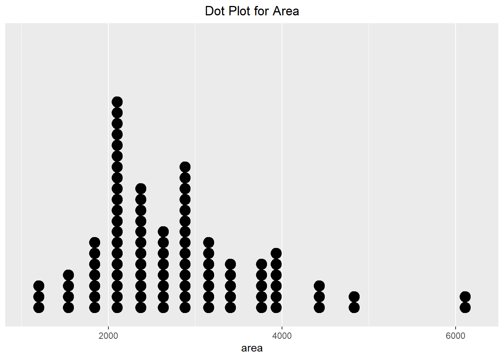
ggplot(duke_forest, aes(x=area)) +
geom_dotplot(method="histodot", binwidth=250, dotsize=0.6) +
scale_y_continuous(breaks=NULL) +
theme(axis.title.y=element_blank()) +
labs(title="Histo-Dot Plot for Area") +
theme(plot.title = element_text(hjust=0.5))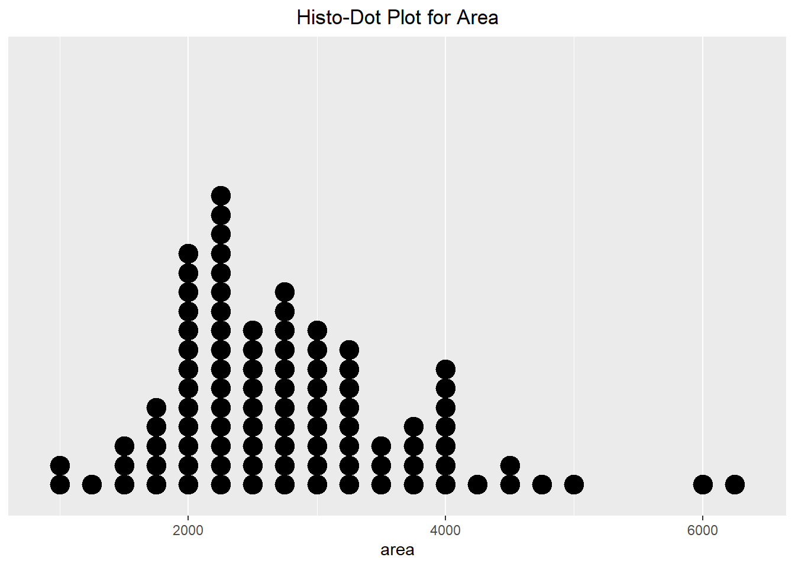
Finally, we can create a dot plot that is stacked around a center line (which makes it kind of look like a Rorschach inkblot test). Because the y-axis is not informative, we can alter the way we visualize the stacks. This method results in better symmetry which is more aesthetically appealing. It also helps make it easier to compare different groups to one another. In the next section, we will see a violin plot, which will mimic the shape of this visualization technique.
ggplot(duke_forest, aes(x=area)) +
geom_dotplot(method="histodot", stackdir="center",
binwidth=250, dotsize=0.6) +
scale_y_continuous(breaks=NULL) +
theme(axis.title.y=element_blank()) +
labs(title="Centered Histo-Dot Plot for Area") +
theme(plot.title = element_text(hjust=0.5))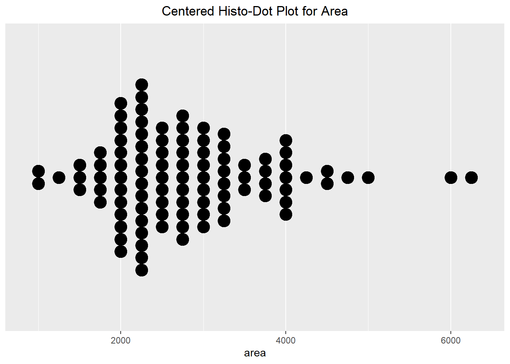
6.2.5 BoxPlots, Violin Plots, and QQnorm
Boxplots are also beneficial in helping visualize how the data looks. It shows how the quantiles look for the dataset, with a box ranging from the first quantile (25% of the data is less than it) to the third quantile (75% of the data is less than it) with the median being displayed with a vertical line. “Whiskers” are then drawn out from the box, with outliers being represented by dots. The Violin plot combines the ideas of density and boxplots to help us view where the data is concentrated. When making a violin plot, you do need to pass a “dummy” value as the other axis value for it to plot properly (shown below as \(y=0\)).
ggplot(duke_forest, aes(x=area)) +
geom_boxplot(fill="lightblue") +
scale_y_continuous(breaks=NULL) +
scale_x_continuous(breaks=seq(from=1000, to=6000, by=1000)) +
labs(title="Box Plot for Area") +
theme(plot.title = element_text(hjust=0.5))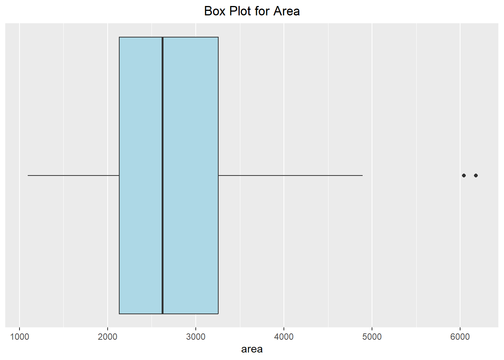
ggplot(duke_forest, aes(x=area, y=0)) +
geom_violin(fill="yellow") +
scale_y_continuous(breaks=NULL) + labs(y=NULL) +
scale_x_continuous(breaks=seq(from=1000, to=6000, by=1000)) +
labs(title="Violin Plot for Area") +
theme(plot.title = element_text(hjust=0.5))
One of the nice aspects of ggplot is that we can add multiple layers to the same plot. This is carried out in the two instances below. When you do this, think about the order you want them to appear, as the code that appears first will “be in the background” and the most recent code will appear “on top” of the previous layers.
ggplot(duke_forest, aes(x=area, y=0)) +
geom_violin() +
geom_boxplot(width=.2, fill="lightblue", outlier.color = "red") +
scale_y_continuous(breaks=NULL) + labs(y=NULL) +
scale_x_continuous(breaks=seq(from=1000, to=6000, by=1000))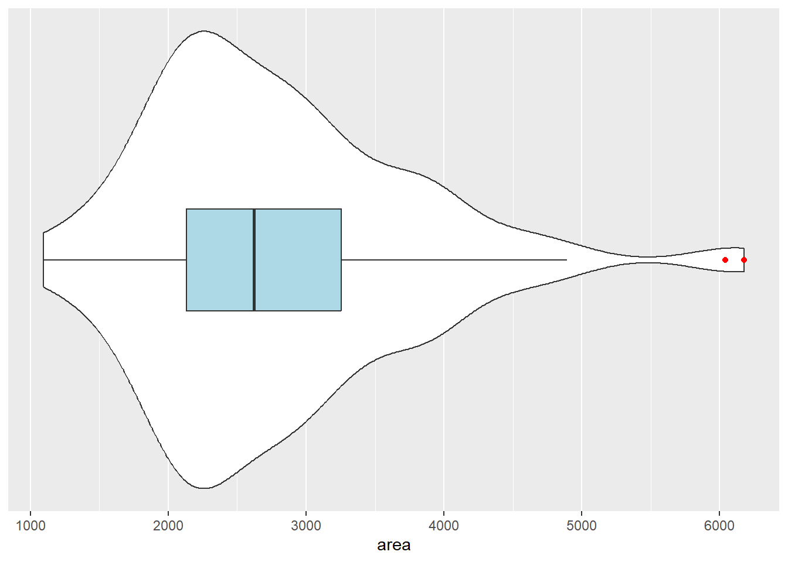
ggplot(duke_forest, aes(x=area, y=0)) +
geom_violin() +
geom_dotplot(method="histodot", stackdir="center", binwidth=160) +
geom_boxplot(width=.1, fill="lightblue",
position= position_nudge(y=0.55)) +
scale_y_continuous(breaks=NULL) + labs(y=NULL) +
scale_x_continuous(breaks=seq(from=1000, to=6000, by=1000))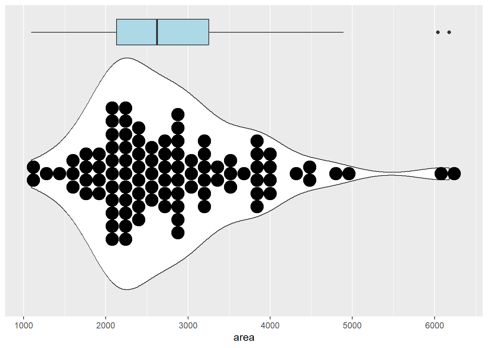
Much like in base R graphics, we can create a Quantile-Quantile plot in ggplot. To do this, we will need to specify “sample” in the aesthetic instead of an axis. There are many different ways we can alter the graphic to make it more visually appealing, but we will keep it plain for this example. An example of this can be seen below:
ggplot(duke_forest, aes(sample=area)) +
stat_qq() +
stat_qq_line()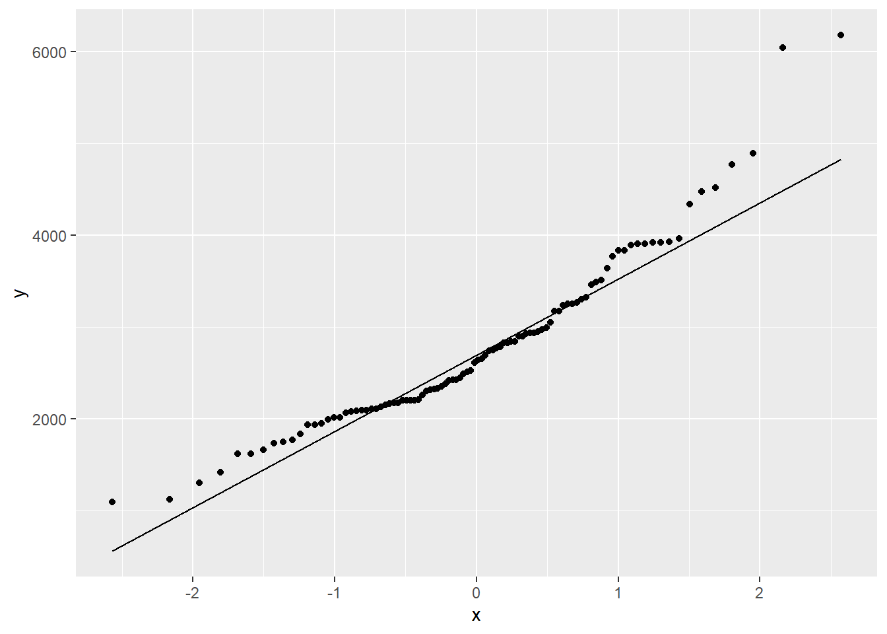
6.2.6 BarPlots
So far we have (mainly) seen how we can visualize quantitative data. If we have categorical data then we have to use a different set of visualizations. One popular method is to use a barplot, which relates the height of the bar to the number of observations in each category. When doing this in ggplot, we need to make sure that the variable we are using is a factor variable. Converting the value to a factor can either be done in the original dataframe or the ggplot() function when we map the variable to the corresponding axis.
In the example below, we visualize the number of bedrooms each house has. Notice that for it to work properly we specify the x-axis as a factor variable:
table(duke_forest$bed)
2 3 4 5 6
4 30 52 11 1 ggplot(duke_forest, aes(x=factor(bed))) +
geom_bar() +
labs(x="Number of Beds")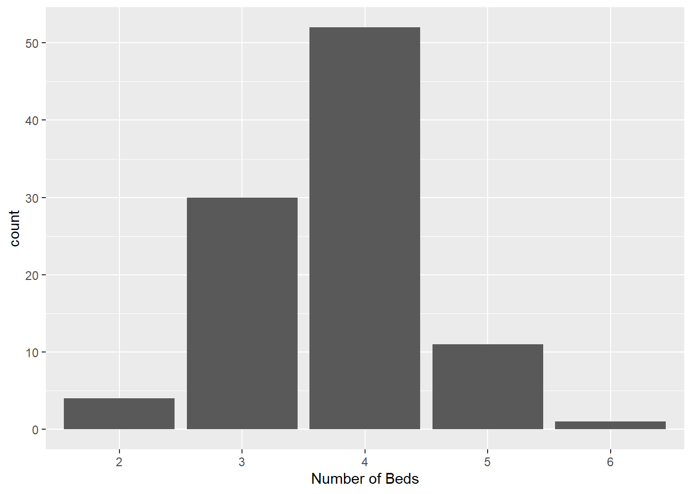
The visualization could be improved by adding color to it. If we were to specify the color inside of the geometry layer then it would apply a uniform color to all of the bars. If we want each bar to be a different color based on its category then we can map this in the aesthetic command. In the first set of code below we map the fill color to the variable “bed” (which is technically numeric!). This causes the bar colors to be chosen based on a color gradient. The second chunk of code shows it done properly, assigning the fill color to the factor variable “bed”. This results in each bar being a different color.
ggplot(duke_forest, aes(x=factor(bed), fill=bed)) +
geom_bar() +
labs(title="When the fill is numeric variable",
x="Number of Beds") +
theme(plot.title = element_text(hjust=0.5))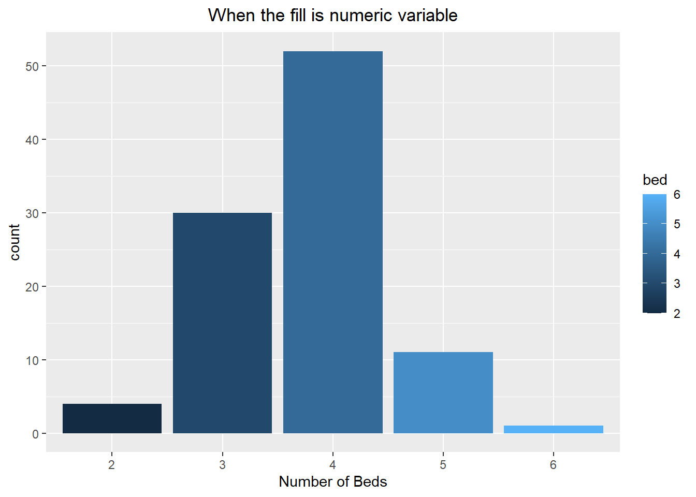
ggplot(duke_forest, aes(x=factor(bed), fill=factor(bed))) +
geom_bar() +
labs(title="When the fill is a factor variable",
x="Number of Beds", fill="Beds") +
theme(plot.title = element_text(hjust=0.5))
Let’s take a look at another example of this process. Here we create a new character variable that includes both the value and the word “Bathrooms”. If we were to make a bar chart of it then we would have trouble reading the labels because they run into each other. To get around this, we can use the coord_flip() command to flip the x and y coordinates, allowing us to have a horizontal barplot. Notice how we can also remove the legend from appearing by setting the position to “none” within the themes() command:
head(duke_forest$bath)[1] 4 4 3 3 3 3duke_forest$num_bath <- factor(paste(duke_forest$bath, "Bathrooms"))
head(duke_forest$num_bath, 4)[1] 4 Bathrooms 4 Bathrooms 3 Bathrooms 3 Bathrooms
8 Levels: 1 Bathrooms 2 Bathrooms 2.5 Bathrooms 3 Bathrooms ... 6 Bathroomsggplot(duke_forest, aes(x=num_bath, fill=num_bath)) +
geom_bar() +
labs(x="Number of Bathrooms", fill="Bathrooms") +
labs(title="Notice how you cannot read the labels") +
theme(plot.title = element_text(hjust=0.5))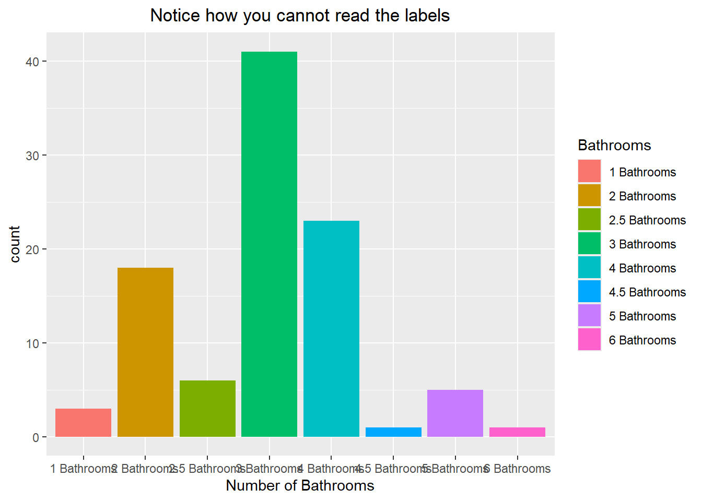
ggplot(duke_forest, aes(x=num_bath, fill=num_bath)) +
geom_bar() +
labs(x="Number of Bathrooms", fill="Bathrooms") +
coord_flip() +
theme(legend.position = "none") +
labs(title="We can flip the x and y coordinates") +
theme(plot.title = element_text(hjust=0.5))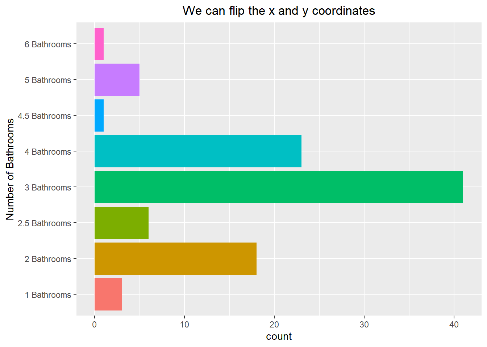
It is possible to reorder the bars so that they appear from largest to smallest. This does require a little bit of work though, as we need to create a dataframe that contains the categories and the number of occurrences. We can then reorder them using the reorder() function. After this is done we can visualize the barplot with the “stat” argument being set to identity (this means it will take the values you give it and not try to count the number of observations). An example of this code can be seen below:
summary(duke_forest$num_bath) 1 Bathrooms 2 Bathrooms 2.5 Bathrooms 3 Bathrooms 4 Bathrooms
3 18 6 41 23
4.5 Bathrooms 5 Bathrooms 6 Bathrooms
1 5 1 bath_f <- as.data.frame(table(duke_forest$num_bath))
colnames(bath_f) <- c("Baths","Count")
bath_f$Baths <- reorder(bath_f$Baths,bath_f$Count)
summary(bath_f) Baths Count
4.5 Bathrooms:1 Min. : 1.00
6 Bathrooms :1 1st Qu.: 2.50
1 Bathrooms :1 Median : 5.50
5 Bathrooms :1 Mean :12.25
2.5 Bathrooms:1 3rd Qu.:19.25
2 Bathrooms :1 Max. :41.00
(Other) :2 ggplot(bath_f, aes(x=Baths, y=Count, fill=Baths)) +
geom_bar(stat="identity") +
coord_flip() +
theme(legend.position = "none") +
labs(title="Re-ordered the Categories") +
theme(plot.title = element_text(hjust=0.5))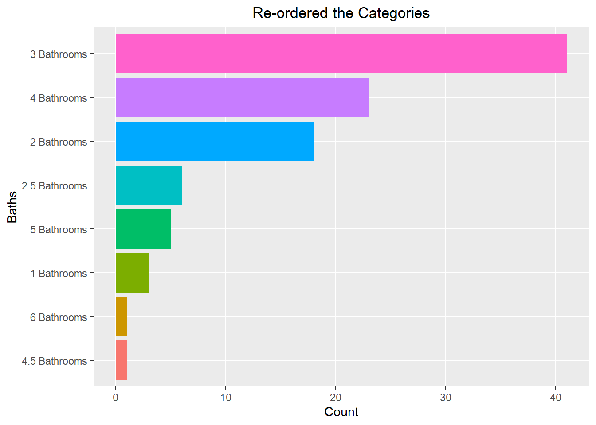
6.3 Bivariate Visualizations
So far we have focused on visualizing univariate data, but it is often the case that we want to visualize our dataset in higher dimensions. To do this, we can look into using at bivariate visualizations, allowing us to see the data based on 2 different variables. Throughout this write-up, we will see examples of quantitative data grouped by categories, quantitative data compared to other quantitative data, and categorical data grouped by other categorical data.
6.3.1 Quantitative data grouped by Categorical
We have previously seen how we can use a density line to visualize the distribution of the data. We can extend this idea by viewing the density line of the data based on some other categorical factor. To do this, we can map the categorical factor to the “fill” aesthetic. This gives each categorical level its own fill color, resulting in multiple density lines being drawn. An example of this can be seen below:
ggplot(iris, aes(x=Sepal.Width, fill=Species)) +
geom_density(alpha=0.2) +
labs(title="Density plot based on Species Type") +
theme(plot.title = element_text(hjust=0.5))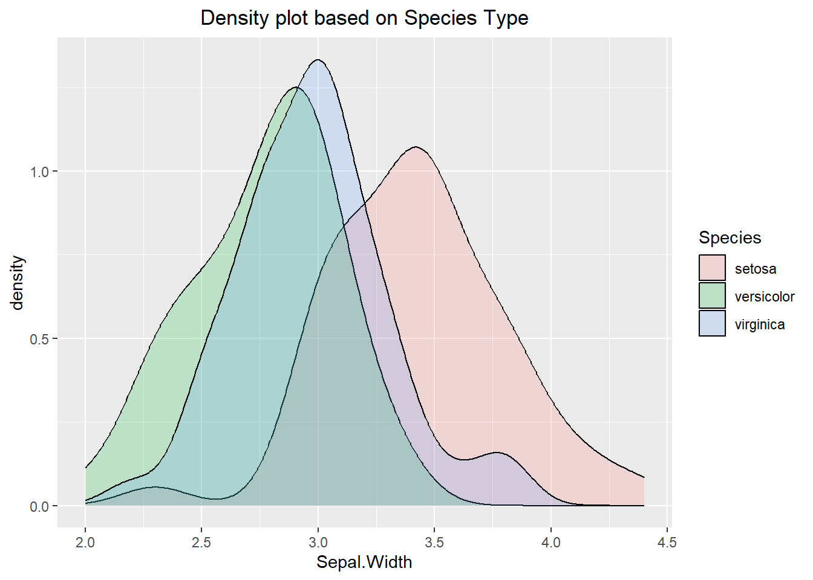
Viewing multiple density lines on the same plot may be hard to interpret, so there are a few different ways to get around it. The first is to use the facet_grid() function which will display the density curves on different panels but in a manner where they can easily be compared to one another. The x and y axes are the same for all panels, but could be changed if you wanted (but you would need to be careful not to mislead the reader).
ggplot(iris, aes(x=Sepal.Width, fill=Species)) +
geom_density(alpha=0.2) +
facet_grid(Species ~.) +
labs(title="Density Plots for Species in a Grid") +
theme(plot.title = element_text(hjust=0.5)) +
theme(legend.position = "none")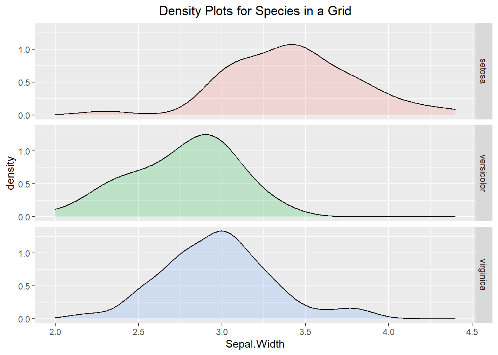
The code can be altered so that instead of the panels being on top of each other they can be next to one another. To do this, we will use the facet_wrap() function. Much like the previous example, the axes are all fixed. In the second visualization below we can see how “freeing” the scales allows for the density lines to be easier to see, but it also makes it harder to compare the density lines to the other categorical levels since the axes are different.
ggplot(iris, aes(x=Sepal.Width, fill=Species)) +
geom_density(alpha=0.2) +
facet_wrap(~ Species) +
labs(title="Density plots based on Species Type") +
theme(plot.title = element_text(hjust=0.5)) +
theme(legend.position = "none")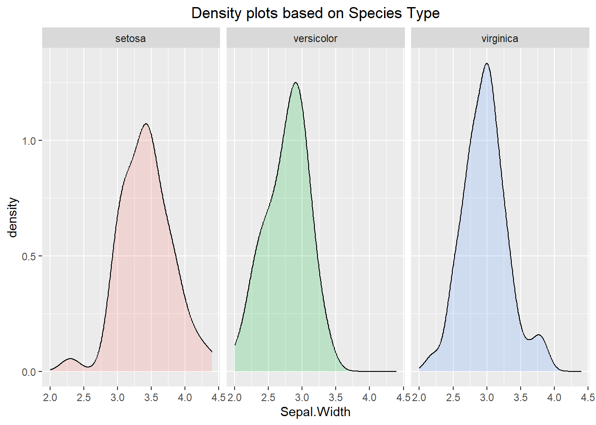
ggplot(iris, aes(x=Sepal.Width, fill=Species)) +
geom_density(alpha=0.2) +
facet_wrap(~ Species, scales="free") +
labs(title="Wrapped Density Plots with free axes") +
theme(plot.title = element_text(hjust=0.5)) +
theme(legend.position = "none")
Histograms can also be visualized using a similar manner. Below we can see a histogram broken apart by the “Species” type. Similar commands to what we did above can be used to break the histogram into different panels and alter the scale on the axes.
ggplot(iris, aes(x=Sepal.Width, fill=Species)) +
geom_histogram(binwidth=0.1) +
labs(title="Histogram showing the Species Type") +
theme(plot.title = element_text(hjust=0.5)) +
theme(legend.position="bottom")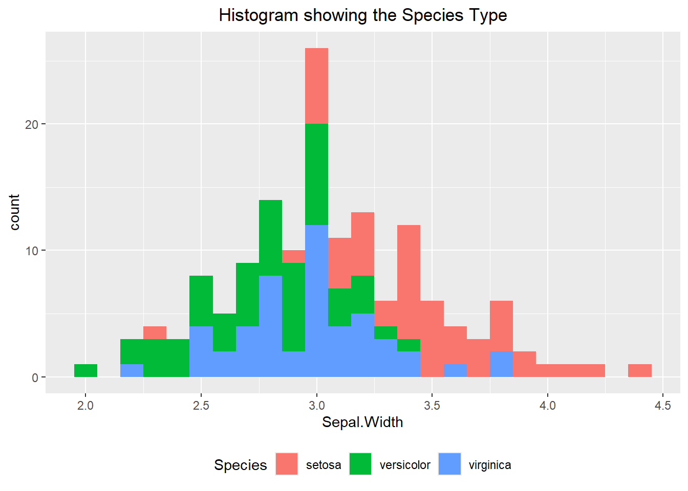
Creating different boxplots for each categorical level can be done as well. Like the previous examples, mapping the categorical variable to the “fill” or “color” argument will accomplish the task. In the example below we decided to add a rug to the visualization using the geom_rug() command. This places a dashed line whenever an observation occurs. The “jitter” argument then randomly moves the line ever so slightly so that if multiple values occur at the same point then they will all show up. Notice how we used the “fill” aesthetic in the base layer of our plot but used the “color” aesthetic in the geom_rug() layer. This is because we only wanted the color to apply to the rug and not the whole visualization.
ggplot(iris, aes(x=Sepal.Width, y=Species, fill=Species)) +
geom_boxplot(alpha=0.7) +
geom_rug(position="jitter", aes(color=Species)) +
theme(legend.position = "none") +
labs(title="Boxplots based on the Species Type with a Rug") +
theme(plot.title = element_text(hjust=0.5))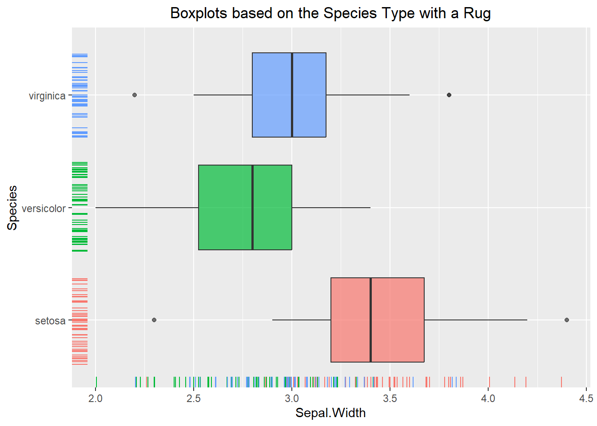
Adding notches on a boxplot can be beneficial if we want to draw attention to where the median is occurring, and we should note that the interpretation does not change at all when we add them. To do this, we can specify “notch=TRUE” within the geom_boxplot() function.
Similar to everything else we have done so far, violin plots can also benefit from breaking the data up by categorical level. An example of this can be seen below:
ggplot(iris, aes(x=Sepal.Width, y=Species, fill=Species)) +
geom_boxplot(notch=TRUE, alpha=0.6) +
theme(legend.position = "none") +
labs(title="Boxplot (with notches) based on the Species Type") +
theme(plot.title = element_text(hjust=0.5))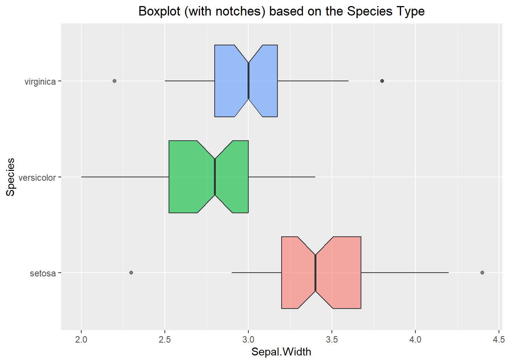
ggplot(iris, aes(x=Sepal.Width, y=Species, fill=Species)) +
geom_violin(alpha=0.6) +
theme(legend.position = "none") +
labs(title="Violin Plot based on the Species Type") +
theme(plot.title = element_text(hjust=0.5))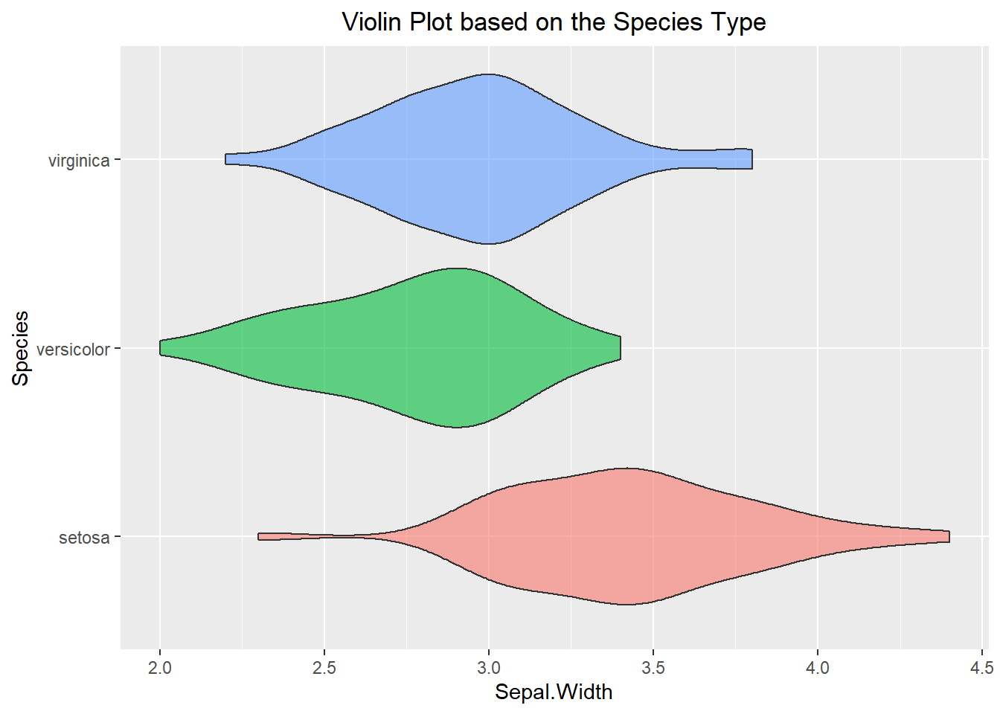
6.3.2 Quantitative data vs. Quantitative data
Comparing two different quantitative variables and seeing how they change in comparison to one another can be beneficial in learning about the dataset we are working with. The most basic way to do this is with a scatter plot, where we take one variable as our x-coordinate and the other variable as our y-coordinate. We can then plot them pairwise on a graph. An example of this can be seen below using the geom_point() layer. Additionally, we can use the point’s color to visualize a categorical variable. This essentially allows us to visualize 3 aspects of our dataset on a single plot! We can see from the example below that it appears that as the Petal Width is increasing so is the Petal Length. Additionally, we can see that the flowers of the same species type tend to have similar characteristics.
ggplot(iris, aes(x=Petal.Width, y=Petal.Length)) +
geom_point() +
labs(title="Scatter Plot for Petal Length vs. Width") +
theme(plot.title = element_text(hjust=0.5))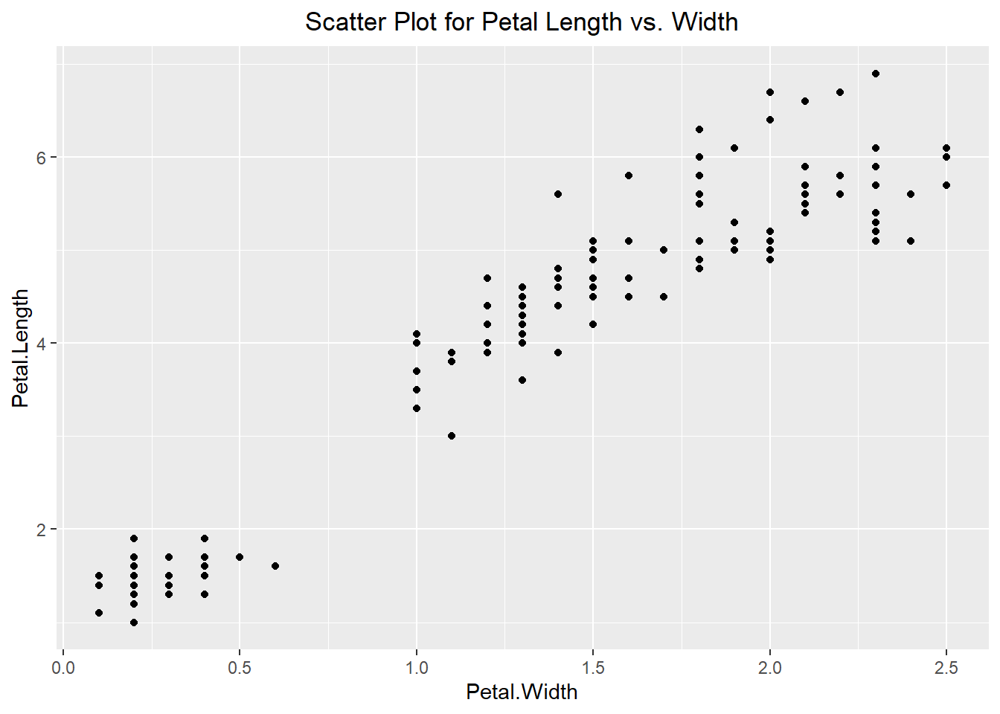
ggplot(iris, aes(x=Petal.Width, y=Petal.Length, color=Species)) +
geom_point() +
geom_jitter() +
labs(title="Scatter Plot for Petal Length vs. Width") +
theme(plot.title = element_text(hjust=0.5))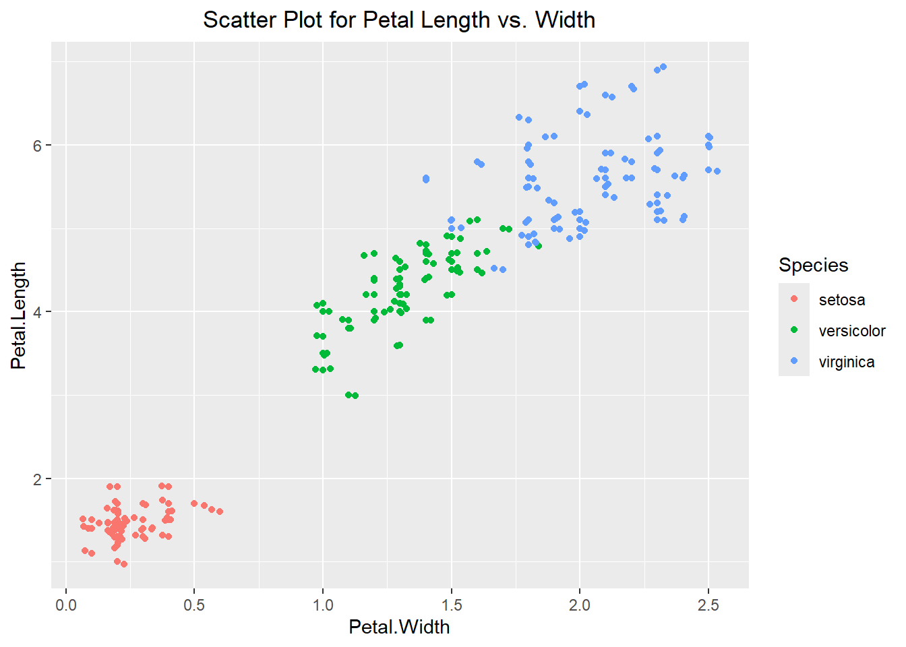
Once we have our scatter plot, we can fit a line to the data to better describe the trend. To do this we can use the geom_smooth() function to fit a smooth line to the plot. Notice how there is a gray band around the blue line. This is the standard error of the estimate of the line. If instead of a curved line, we want a straight line then we can specify the method to be “lm” (standing for linear model). We can also remove the standard errors as seen in the example below:
ggplot(iris, aes(x=Petal.Width, y=Petal.Length)) +
geom_point() +
geom_jitter() +
geom_smooth() +
labs(title="Scatter Plot for Line of Best Fit") +
theme(plot.title = element_text(hjust=0.5))`geom_smooth()` using method = 'loess' and formula = 'y ~ x'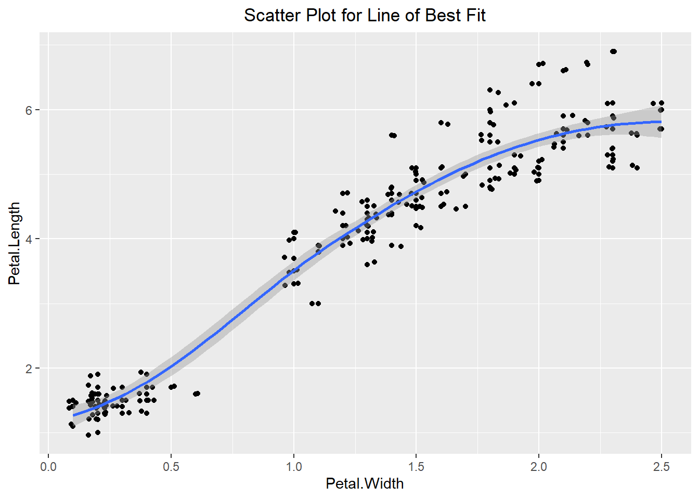
ggplot(iris, aes(x=Petal.Width, y=Petal.Length)) +
geom_point() +
geom_jitter() +
geom_smooth(method="lm", se=FALSE) +
labs(title="Scatter Plot for Linear Model (lm)") +
theme(plot.title = element_text(hjust=0.5))`geom_smooth()` using formula = 'y ~ x'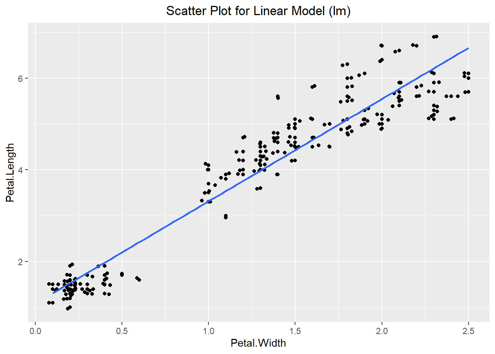
There are additional visualizations we might use to explore our dataset such as the hexplot and the contour plot. The hexplot acts similar to a 2-dimensional histogram in that it groups the data but instead of representing the count by the height of the bar, it represents the count based on the color of the hex (similar to a heat map). On the other hand, a contour plot is essentially a 2-dimensional density plot. The closer the lines are to one another the more observations we have in that general area.
ggplot(iris, aes(x=Petal.Width, y=Petal.Length)) +
geom_hex(bins=15) +
geom_smooth(method="lm", se=FALSE) +
labs(title="HexPlot for Petal Length vs. Width") +
theme(plot.title = element_text(hjust=0.5))`geom_smooth()` using formula = 'y ~ x'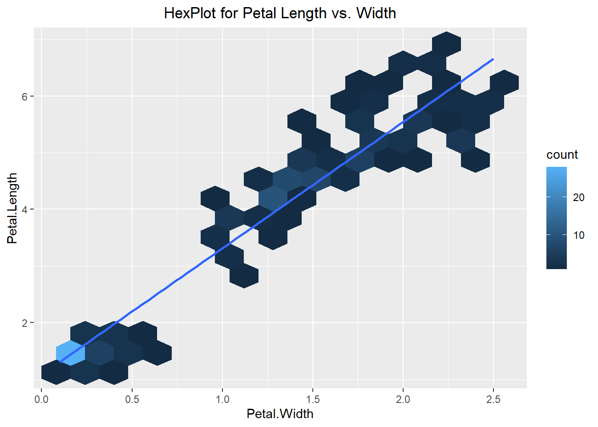
ggplot(iris, aes(x=Petal.Width, y=Petal.Length)) +
stat_density2d() +
geom_point() +
geom_jitter() +
labs(title="Contour Plot for Petal Length vs. Width") +
theme(plot.title = element_text(hjust=0.5))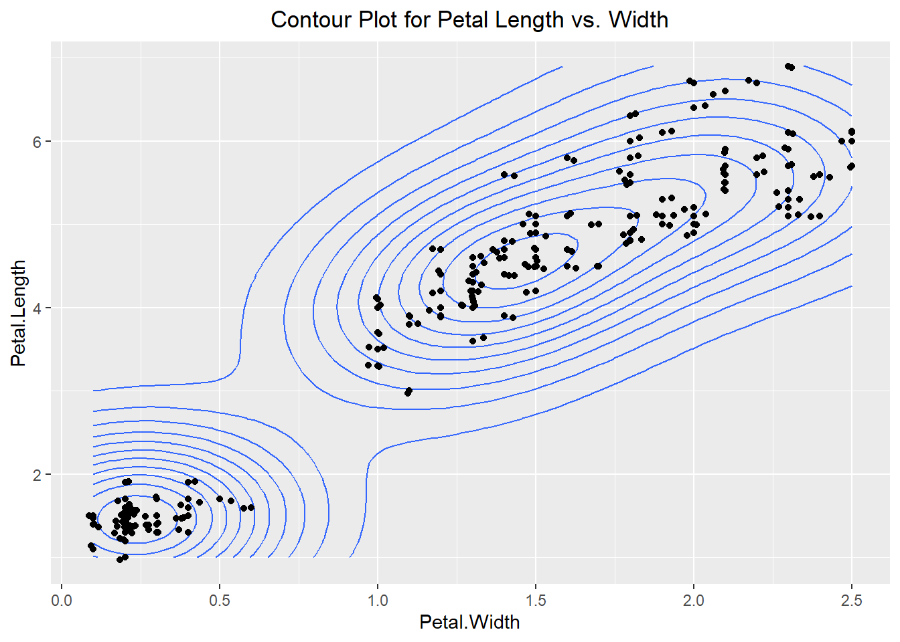
6.3.3 Categorical data by Categorical data
Visualizing the number of observations that meet certain criteria for each categorical level is also beneficial to understanding the dataset. Since the “iris” dataset only has 1 categorical variable we have created another (T/F) based on whether the Sepal Width is greater than 3 or not. We can see in the barplot below that we can count the number of times each Species occurs in the True and the False column.
ggplot(iris, aes(x= Sepal.Width > 3, fill=Species)) +
geom_bar() +
labs(title="BarPlot depending on if Sepal Width > 3") +
theme(plot.title = element_text(hjust=0.5))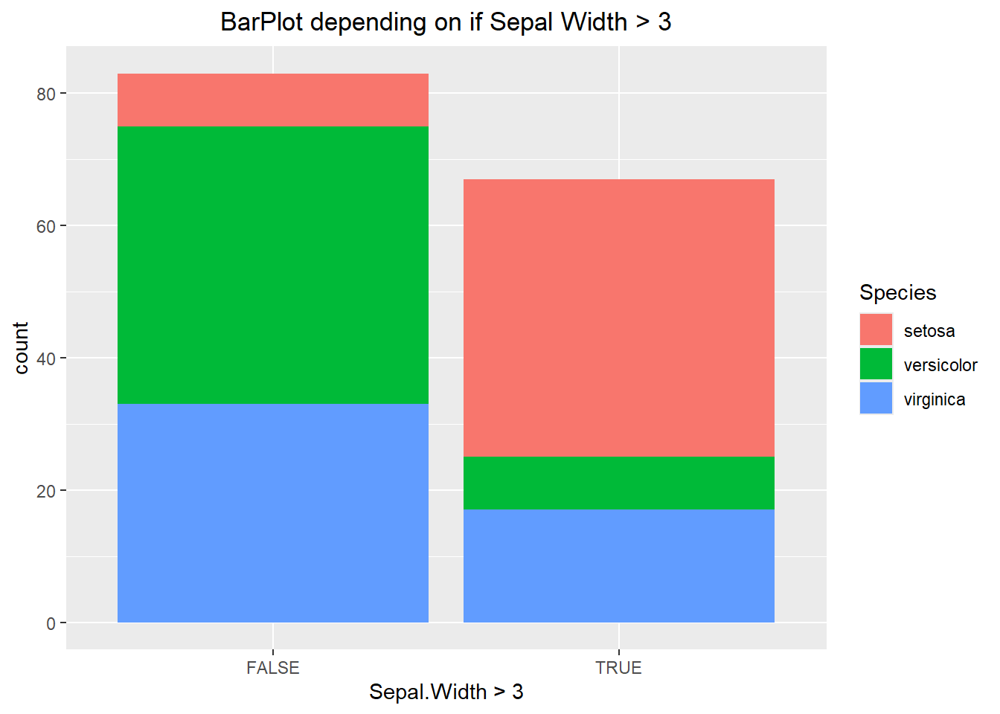
The visualization above makes it hard to compare categories to one another. In the first chunk of code below we specify the position to be “fill”. This alters each bar to be the same height, which allows us to compare percentages between the two. If we were to specify the position to be “dodge” then this offsets each or the bars, better allowing us to compare values of the same category. Each has its purpose and it will be up to you the data scientist to decide when to use each one.
ggplot(iris, aes(x= Sepal.Width > 3, fill=Species)) +
geom_bar(position="fill") +
labs(title="BarPlot with position set to fill") +
theme(plot.title = element_text(hjust=0.5))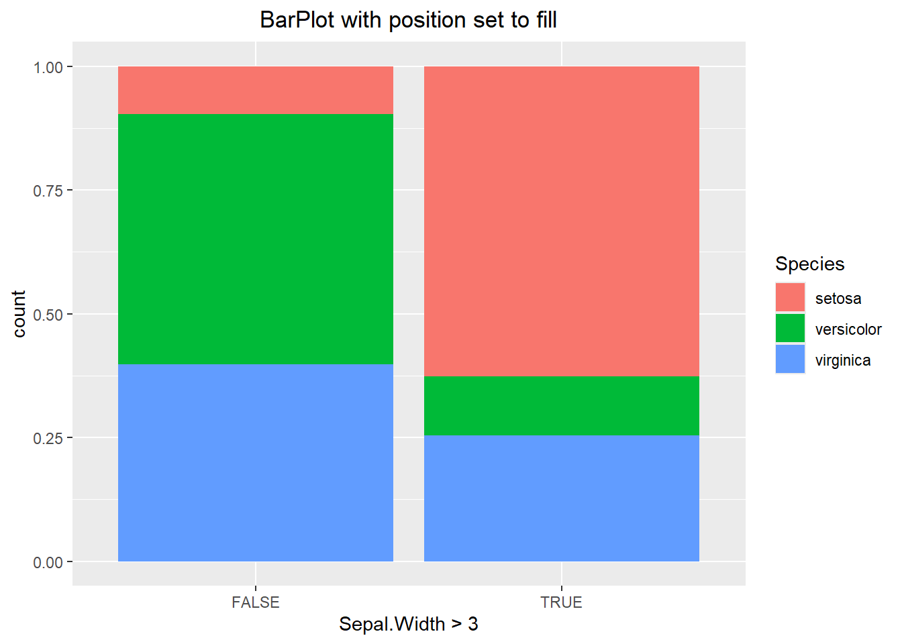
ggplot(iris, aes(x= Sepal.Width > 3, fill=Species)) +
geom_bar(position="dodge") +
labs(title="BarPlot with position set to dodge") +
theme(plot.title = element_text(hjust=0.5))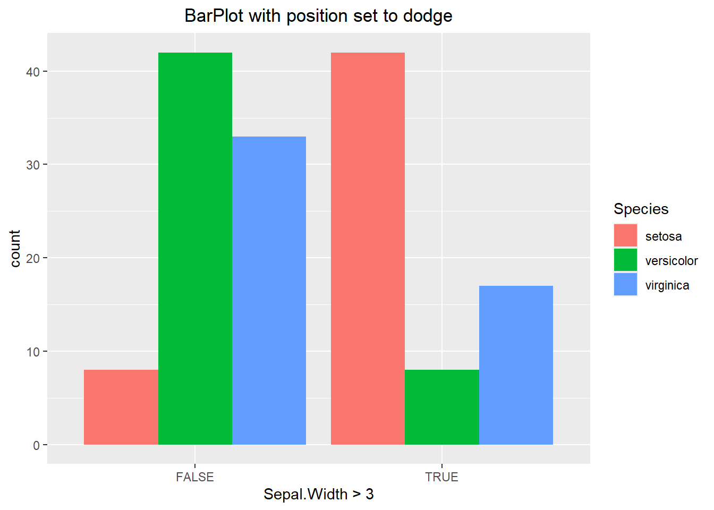
6.3.4 Univariate Bar Plot variations
You might have noticed that ggplot does not have all of the same visualization options that base R has. For instance, there is no quick and easy way to make a waffle or Pareto chart. While there is no command to do a pie chart either, we can manipulate the plot so that it mimics one. Before running this example we will need to subset our data so that we are only looking at observations that have a Sepal Width greater than 3. We can then create a barplot and remove the theme (using the theme_void() layer) since it is unnecessary.
my_iris <- iris[iris$Sepal.Width > 3,]
ggplot(my_iris, aes(x=1, fill= factor(Species))) +
geom_bar() +
theme_void() +
labs(title="Stacked Barplot with no theme", fill="Species") +
theme(plot.title = element_text(hjust=0.5))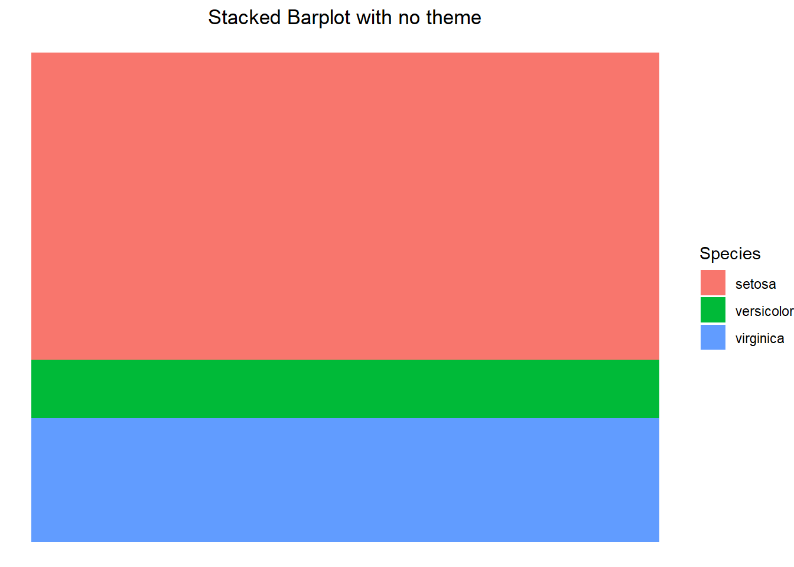
After we have constructed the stacked barplot, we can then alter the coordinate system to polar coordinates using the coord_polar() function. In the first example, we specify theta to be “y” which essentially indicates we are wrapping the top and bottom of the bar around the y-axis and connecting the ends. This creates a pie chart. If we were to specify theta to be “x” then we are essentially wrapping the right and left end of the bar around the x-axis and connecting the ends, resulting in a bullseye chart.
ggplot(my_iris, aes(x=1, fill= factor(Species))) +
geom_bar() +
theme_void() +
labs(title="Pie Chart", fill="Species") +
theme(plot.title = element_text(hjust=0.5)) +
coord_polar(theta="y")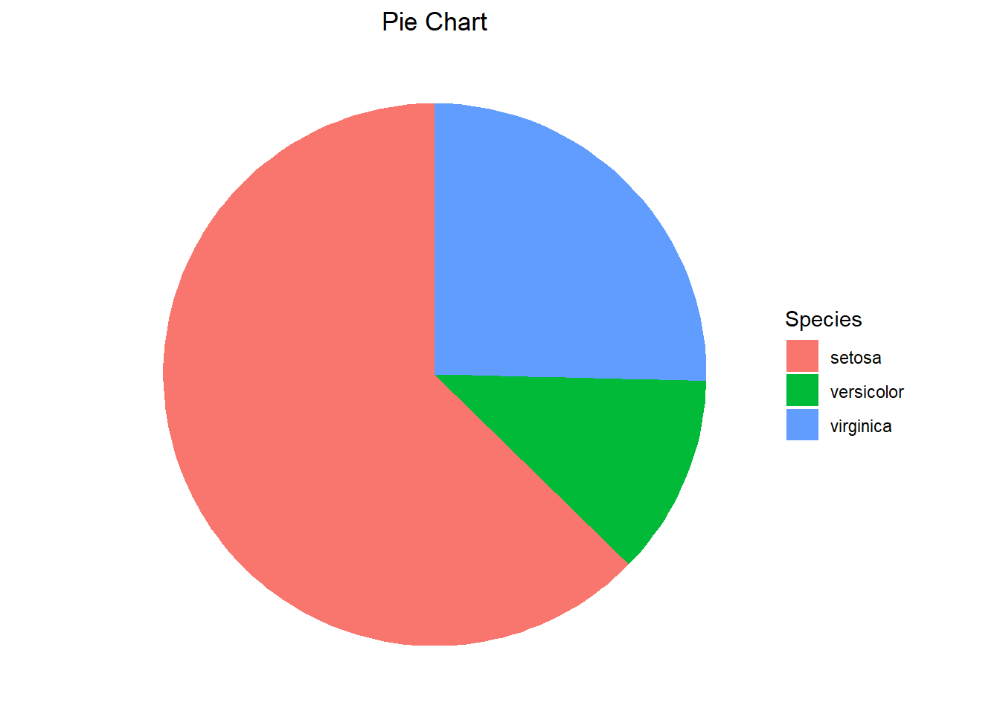
ggplot(my_iris, aes(x=1, fill= factor(Species))) +
geom_bar() +
theme_void() +
labs(title="Bullseye Chart", fill="Species") +
theme(plot.title = element_text(hjust=0.5)) +
coord_polar(theta="x")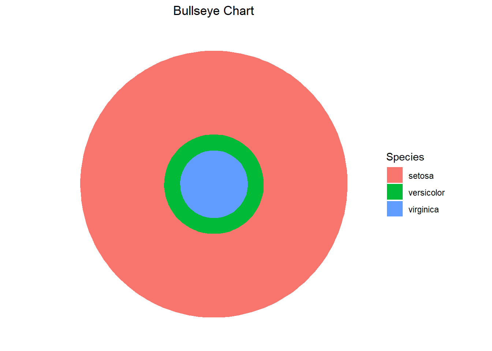